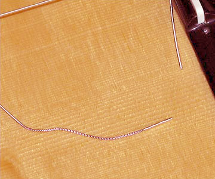
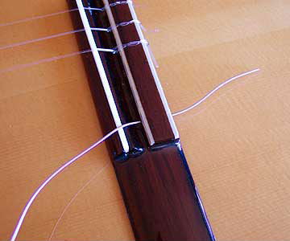
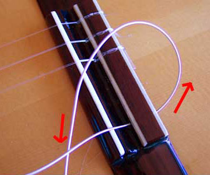
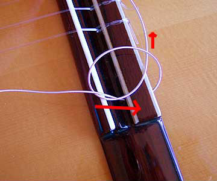
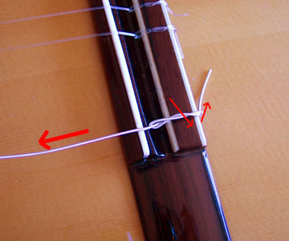
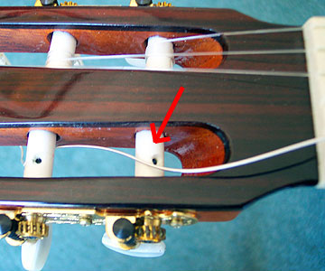
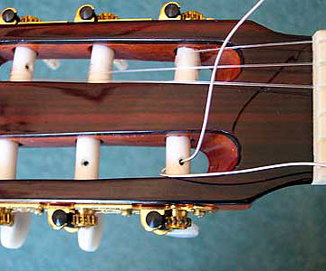
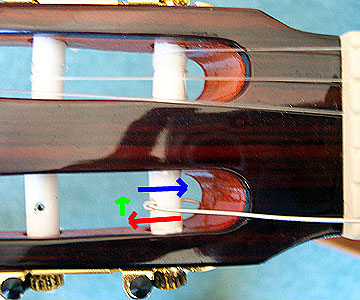
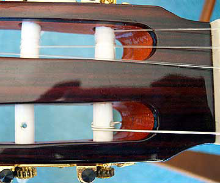
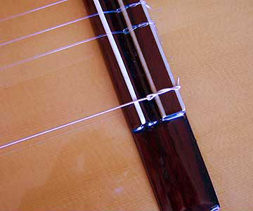

You are in Derek Hasted > Floor 5 > Library > Restringing a guitar
Restringing a classical guitar
Guitar strings are a bit like bicycle tyres - they wear out and have to be replaced.
In fact they are more than a bit like bicycle tyres - there's the guitar equivalent of a puncture - an infrequent, but sudden and premature failure of a string, usually mid-piece!
Guitars aren't as greasy as bicycles, so it's well worth getting the hang of changing strings yourself rather than taking the guitar to a music shop. But that first time of restringing can be a nightmare that seems to require you to have the dexterity of a brain surgeon. And three hands.
Here are photos to guide you through the process.
So when do you restring?
See my "when to restring" article!
Knot a lot...
There are, of course, several ways to restring a guitar, and one or two enthusiasts will have their own style of knotting that gives their guitar an individual appearance. But here's my take on tying those knots...
Let's start at the bridge end

I change one string at once (in the photos I've removed other strings so you can see what's going on more easily).
I start with the bottom string - it settles fastest; by the time we replace the top string, we have a "good" string to tune to without needing electronic tuners or tuning forks all the time.
Some overwound strings have a "good end" and a "bad end" (with a sparse winding) - it's not a manufacturing fault.
If we tie the bad end at the bridge and part of the “sparse winding” extends onto the vibrating length of the string, the string will sound “out”.
So I'll tie the knot using the end of the string that's at the top of the picture.

Lay the guitar on your lap, and sit well away from objects like tables, because the first time you do this, the guitar may slide around like a freshly-caught eel!
Pass the good end through the hole and leave yourself enough to work with. You can cut off any spare string later.
Don't go mad though - the strings are only so long!
As you get more skilled, you'll be able to judge exactly how much string to use.

As you feed the string through in the direction of the red arrow, take the good end and pass it under the string.
In the photo, I've made a larger loop than we need, simply so you can see it more clearly.
If you are left handed, you might want to do the mirror image of this - indeed, if you look at the photo, the top strings (which I haven't replaced yet) are a mirror image of the knot I'm about to tie.

Take the free end in your right hand and tuck it under the string (see the arrows in the photos)
In this photo it's gone under the string once.
In the next one I've gone under again - take the free end, pull it towards you, and thread it back under the the string, just to the right of where it goes under here. See the arrows in the next photo, but that photo is after the knot is tightened.
HINT : The monofilament strings are very slippery - loop round 3 times, rather than 2 - then you can be sure they will never slip.

HINT : When you have looped it, trap the free end at the back of the bridge, as shown here - it is more secure!
Pull gently on the vibrating part of the string to tighten the knot, but don’t overdo it - let the knot seat itself under tension.
If you lever the knot really tight, you will put a sharp kink in the string as it passes from the bridge saddle to the hole in the tie-block.
A gentle kink is fine - it shows the knot is holding. A severe kink stretches the fibres in the taut portion of the string unevenly - some will snap, leading to the eventual failure of the string where the knot is tied.
Now to the other end...

At the tuning peg end, rotate the appropriate roller (arrowed) so that the hole is aligned as shown.
Drape the string over the roller.

From the underside of the roller, bring the string through the hole.
Many guitarists believe that the more windings there are on the
roller, the more the string misbehaves when there are changes in
temperature.
To minimise the wrap, pull all the string through, seating the string in the nut slot as you do so.

I've turned the peg a bit now so that you can see the arrows more easily, but there is no need to do so.
In the last step, you passed the string through the hole and pulled it tight (the red arrow).
Now take the free end over the string (green arrow) and back through the hole (blue arrow).
It's as if you've stapled the string down!

Wind the string, ensuring that successive windings are adjacent, and on the side of the bobbin hole that's nearer the nut slot.
If you let the windings stray all over the bobbin, they may reach the sides; further turns of the peg wedge the string into an ever decreasing gap, jamming the bobbin. If you apply more force on the peg, you might crack it (I've seen that done!)
Because I pulled the string tight before I stapled it, there are only a couple of turns on the bobbin (the photo shows the string up to pitch).
Don't worry about the string straying on the bobbin once it's up to pitch - the amount of adjustment you'll make is tiny.
And finally...

The last job is to trim the ends of the strings back.
CAUTION : A long string tail at the bridge will reach the front of the guitar and can be the source of hard-to-find buzzes!
The more often you can tune the guitar back to pitch in the first few days, the faster it will settle down.
See also
The when to restring article
Download this teach-in |
Download an e-book of all the teach-ins |
Back to the Library |